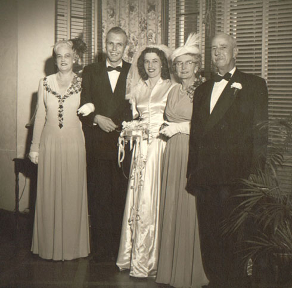
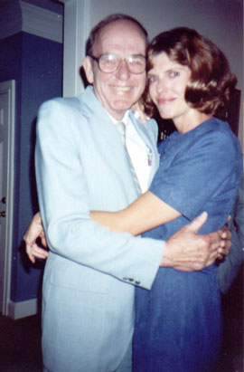

Richard Dean Gerber
1925 - 2011
Richard Dean Gerber, who went by Dick, was born in Oklahoma on 15 February 1925. As a child, Dick followed the exploits of Charles Lindburgh, built model airplanes, and dreamed of becoming a pilot one day. When WWII broke out, Dick tried to join up, but his parents refused to sign the papers. On his 18th birthday he tried again, signing up for the Army Air Force, and this time his parents agreed. Unfortunately, Dick hurt his back a week before his physical test to be pilot, so he washed out. Richard was sent to basic training as a regular private, but while there he aced the IQ test and he was quickly pulled out and sent to work on a top secret program: RADAR. Developed mainly by the British early in the war, radar involves bouncing a radio signal off an object gauge it's distance. Naturally, the Army wanted various theater commanders to use this tool that gave them an advantage over the enemy. Many of these, however, were skeptical of a little black box that supposedly let you see through clouds or in the dark. So the Army set up a training facility in Florida to demonstrate the usefulness of this new tool to generals, colonels and the like. Dick worked as a RADAR instuctor at this school, and proudly tells stories of the officers' amazement as they flew in a B-17 over Jacksonville and saw the minute details of the city appear before them on the radar screen.
|
After the war, Dick attended the University of Florida, receiving a Bachelor's in Sociology. It was there that he met a master's student, Ruth Curnick, whom he later married. Together they had two children, Beverly and Alan. Richard also graduated from the Northwestern University School of Mortgage Banking.
|

Richard & Ruth Gerber with her parents (right) and Dick's university "house mother" at their wedding
|

Richard and his daughter Bev in 1997.
|
When Dick's father-in-law died, he took over the care of his invalid mother-in-law Gladys, who came to live with them. In 1978 he founded Fairland Mortgage Company in Annandale, VA and worked to build it into a strong and successful business. Unfortunately, Ruth died in 1980. Love found Dick again in the person of Emma Wilkins, whom he wed March 10th, 1982. Gladys continued to live with them and Emma help in her care until her death in the mid-1980's. Dick had several nicknames given to him by various members of the family. His daughter has always called him "D", short for dad. His grandfather called him Mike - a name that everyone in the family not directly descended from him now uses. When he married Emma, he started going by Richard, because that was what she called him. In 1988, Richard started Builders Showcase Realty, Inc., and built it into a successful business. In the mid-90's Richard and Emma sold their house in Annandale and moved to a house he had built on Lake Anna, also in Virginia. Richard personifies the old American entreprenurial spirit. He remained the owner or
part-owner of several businesses he started until the end, and he built some
100 houses and funded some 4000 mortgages over the span of his life. He lived out his last few years with Emma on Lake Anna
before dying January 16, 2011.
|
Parents:
John Edward Gerber ???? - 19??
Eva Gerber ???? - 19??
Offspring:
Beverly Ruth Gerber 1952 - ?
Alan Richard Gerber 1955 - ?
References:
1. Richard Gerber
2. Bradley Wogsland
3. Bev Greenfield
Last changed upon 20 January 2011 by
Bradley Wogsland.